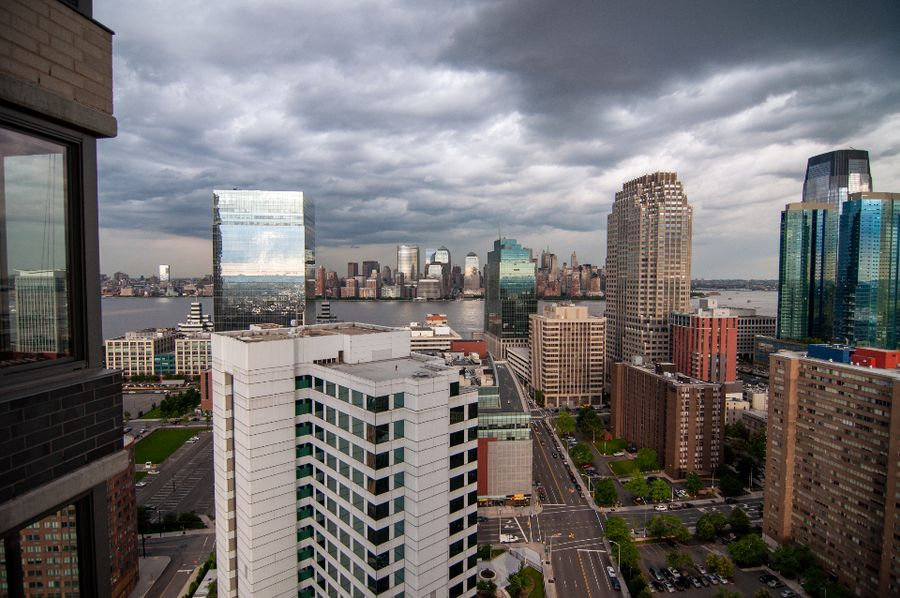

サンクスギビングの残り物260トンが、いかにしてアメリカの象徴「テレビディナー」を生んだかHow 260 tons of Thanksgiving leftovers inspired an American icon: the TV dinner初のテレビディナーの誕生の背景には、サンクスギビングと大量に余った冷凍七面鳥とのつながりがある。
サンクスギビングの残り物260トンが、いかにしてアメリカの象徴「テレビディナー」を生んだかHow 260 tons of Thanksgiving leftovers inspired an American icon: the TV dinner初のテレビディナーの誕生の背景には、サンクスギビングと大量に余った冷凍七面鳥とのつながりがある。 ギブズが爆発も、「アイスマン」ウィリアムズとベアーズがサンクスギビングの激闘で主役を奪うGibbs goes off but 'Iceman' Williams, Bears steal the show in Thanksgiving thrillerケイレブ・ウィリアムズが再び「アイスマン」となり、ベアーズにライオンズ戦での劇的な終盤の勝利をもたらした。
ギブズが爆発も、「アイスマン」ウィリアムズとベアーズがサンクスギビングの激闘で主役を奪うGibbs goes off but 'Iceman' Williams, Bears steal the show in Thanksgiving thrillerケイレブ・ウィリアムズが再び「アイスマン」となり、ベアーズにライオンズ戦での劇的な終盤の勝利をもたらした。 包括的な許認可改革法案が下院へ。批判派は阻止を求めるA sweeping permitting reform bill is headed to the House. Critics want to stop itトランプ大統領は、連邦のインフラおよびエネルギー事業の承認を迅速化する超党派法案を支持している。批判派は、それが代償を伴う形で進められると述べている。
包括的な許認可改革法案が下院へ。批判派は阻止を求めるA sweeping permitting reform bill is headed to the House. Critics want to stop itトランプ大統領は、連邦のインフラおよびエネルギー事業の承認を迅速化する超党派法案を支持している。批判派は、それが代償を伴う形で進められると述べている。 QBロジャース、ウェーバーをクリアし正式にフリーエージェントにQB Rodgers officially a free agent after clearing waiversアーロン・ロジャースは木曜日にウェーバーをクリアし、正式にフリーエージェントとなり、どのチームとも契約できるようになった。
QBロジャース、ウェーバーをクリアし正式にフリーエージェントにQB Rodgers officially a free agent after clearing waiversアーロン・ロジャースは木曜日にウェーバーをクリアし、正式にフリーエージェントとなり、どのチームとも契約できるようになった。 情報筋：ミシガンQBアンダーウッド、ライバルのオハイオ州立大戦で先発見込みSources: Michigan QB Underwood expected to start vs. rival Ohio Stateハムストリングの負傷を抱えていたミシガンのQBブライス・アンダーウッドは、土曜日のオハイオ州立大戦で先発する見込みだと、情報筋がESPNのピート・サメル氏に語った。
情報筋：ミシガンQBアンダーウッド、ライバルのオハイオ州立大戦で先発見込みSources: Michigan QB Underwood expected to start vs. rival Ohio Stateハムストリングの負傷を抱えていたミシガンのQBブライス・アンダーウッドは、土曜日のオハイオ州立大戦で先発する見込みだと、情報筋がESPNのピート・サメル氏に語った。 マイアミ、トップDEがオハイオ州立大へのコミットを撤回した数時間後に全体2位のリクルート、ジェイコブズを獲得Miami lands No. 2 recruit Jacobs hours after top DE decommitted from Ohio State2027年クラスの全体2位のリクルートで5つ星ディフェンシブエンドのD.J.ジェイコブズは、木曜日にオハイオ州立大へのコミットを撤回した数時間後、マイアミへのコミットを表明した。
マイアミ、トップDEがオハイオ州立大へのコミットを撤回した数時間後に全体2位のリクルート、ジェイコブズを獲得Miami lands No. 2 recruit Jacobs hours after top DE decommitted from Ohio State2027年クラスの全体2位のリクルートで5つ星ディフェンシブエンドのD.J.ジェイコブズは、木曜日にオハイオ州立大へのコミットを撤回した数時間後、マイアミへのコミットを表明した。 76ersのブラウン（ハムストリング）がペイサーズ戦を欠場、エンビード（体調不良）は出場不確定76ers' Brown (hamstring) out at Pacers; Embiid (illness) questionable76ersのジェイレン・ブラウン（ハムストリング）は、金曜日のペイサーズ戦のNBAカップで欠場する。ジョエル・エンビード（体調不良）は出場が不確定だ。
76ersのブラウン（ハムストリング）がペイサーズ戦を欠場、エンビード（体調不良）は出場不確定76ers' Brown (hamstring) out at Pacers; Embiid (illness) questionable76ersのジェイレン・ブラウン（ハムストリング）は、金曜日のペイサーズ戦のNBAカップで欠場する。ジョエル・エンビード（体調不良）は出場が不確定だ。 第13週ゲームデー・キックオフ：ライバルへのあからさまな憎しみに勝るものはないWeek 13 Game Day Kickoff: Nothing compares to the outright hatred of a rivalライバルリー・ウィークに何が期待できるか、注目試合や選手から番狂わせの警戒対象チームまで。
第13週ゲームデー・キックオフ：ライバルへのあからさまな憎しみに勝るものはないWeek 13 Game Day Kickoff: Nothing compares to the outright hatred of a rivalライバルリー・ウィークに何が期待できるか、注目試合や選手から番狂わせの警戒対象チームまで。 2026年のミシガンとオハイオ州立大に何が問題だったのか？What went wrong for Michigan and Ohio State in 2026?ミシガンとオハイオ州立大は、土曜日の試合を前に合計9敗を喫している。
2026年のミシガンとオハイオ州立大に何が問題だったのか？What went wrong for Michigan and Ohio State in 2026?ミシガンとオハイオ州立大は、土曜日の試合を前に合計9敗を喫している。 NPRの「Here to Help」シリーズ、高齢のアメリカ人を助けるボランティアを振り返るNPR's 'Here to Help' series looks back at volunteers helping older AmericansNPRの「Here to Help」シリーズは、2026年に紹介された、地域社会で高齢者を支援することに注力するボランティアたちを振り返る。
NPRの「Here to Help」シリーズ、高齢のアメリカ人を助けるボランティアを振り返るNPR's 'Here to Help' series looks back at volunteers helping older AmericansNPRの「Here to Help」シリーズは、2026年に紹介された、地域社会で高齢者を支援することに注力するボランティアたちを振り返る。 アーロン・ロジャースとマイク・マッカーシーの関係はどうしてここまで悪化したのか、そして今後はどうなるのか？How did things get so bad for Aaron Rodgers and Mike McCarthy, and what's next?今日のニュースはNFLを揺るがし、ESPNのインサイダーたちがQB、コーチ、そして彼らの将来についての見解を共有している。
アーロン・ロジャースとマイク・マッカーシーの関係はどうしてここまで悪化したのか、そして今後はどうなるのか？How did things get so bad for Aaron Rodgers and Mike McCarthy, and what's next?今日のニュースはNFLを揺るがし、ESPNのインサイダーたちがQB、コーチ、そして彼らの将来についての見解を共有している。 チーフスとビルズが2017年のトレードに感謝できる理由、マホームズをカンザスシティにもたらした取引Why the Chiefs and Bills can give thanks to 2017 trade that landed Mahomes in K.C.カンザスシティはパトリック・マホームズ獲得のため順位を上げてトレードし、バッファローはフランチャイズのレフトタックルと複数のプロボウラーを獲得した。
チーフスとビルズが2017年のトレードに感謝できる理由、マホームズをカンザスシティにもたらした取引Why the Chiefs and Bills can give thanks to 2017 trade that landed Mahomes in K.C.カンザスシティはパトリック・マホームズ獲得のため順位を上げてトレードし、バッファローはフランチャイズのレフトタックルと複数のプロボウラーを獲得した。 17歳から25歳まで、各年齢の最有望選手はこちらFrom 17 to 25, here is the best prospect at each age
17歳から25歳まで、各年齢の最有望選手はこちらFrom 17 to 25, here is the best prospect at each age ライブでフォロー：ギブスの3回目のラッシングTDでデトロイトのリードが拡大Follow live: Gibbs' third rushing TD extends Detroit lead
ライブでフォロー：ギブスの3回目のラッシングTDでデトロイトのリードが拡大Follow live: Gibbs' third rushing TD extends Detroit lead 英国、ジェフリー・エプスタインとつながりのある大使ピーター・マンデルソンに関する文書を公開U.K. Releases Files on Peter Mandelson, Ambassador Tied to Jeffrey Epstein木曜日に公開された文書は、ピーター・マンデルソンの性急な任命と、ロビー活動団体グローバル・カウンセルとの継続的な関係に新たな光を当てている。
英国、ジェフリー・エプスタインとつながりのある大使ピーター・マンデルソンに関する文書を公開U.K. Releases Files on Peter Mandelson, Ambassador Tied to Jeffrey Epstein木曜日に公開された文書は、ピーター・マンデルソンの性急な任命と、ロビー活動団体グローバル・カウンセルとの継続的な関係に新たな光を当てている。 私のタイプライターを讃えてIn Praise of My Typewriterニューヨーク・タイムズのAIプロジェクト編集者は毎日チャットボットを使っている。しかし執筆の時になると、1950年代のオリベッティ・レッテラ22に手を伸ばす。
私のタイプライターを讃えてIn Praise of My Typewriterニューヨーク・タイムズのAIプロジェクト編集者は毎日チャットボットを使っている。しかし執筆の時になると、1950年代のオリベッティ・レッテラ22に手を伸ばす。 メイシーズ感謝祭パレード、計画の変更でマーチングバンドに混乱と追加費用Macy’s Thanksgiving Day Parade Upends Plans and Adds Costs for Marching Bands9つのマーチングバンドがメイシーズ感謝祭パレードで演奏する予定だった。イベントを土曜日に移す決定は、新たな物流上の課題を
メイシーズ感謝祭パレード、計画の変更でマーチングバンドに混乱と追加費用Macy’s Thanksgiving Day Parade Upends Plans and Adds Costs for Marching Bands9つのマーチングバンドがメイシーズ感謝祭パレードで演奏する予定だった。イベントを土曜日に移す決定は、新たな物流上の課題を ダン・カーニー氏が死去した。ピザハットを共同創業し、その後、至る所で見かける存在にした。Dan Carney Has Died. He Co-Founded Pizza Hut and Then Made It Ubiquitous.象徴的な赤い屋根を持つそのフランチャイズは、カンザス州の小さなレンガ造りの小屋から小さく始まった。10年余り後には、世界最大のピザチェーンとなっていた。彼は…
ダン・カーニー氏が死去した。ピザハットを共同創業し、その後、至る所で見かける存在にした。Dan Carney Has Died. He Co-Founded Pizza Hut and Then Made It Ubiquitous.象徴的な赤い屋根を持つそのフランチャイズは、カンザス州の小さなレンガ造りの小屋から小さく始まった。10年余り後には、世界最大のピザチェーンとなっていた。彼は… ブラック・アンド・タン・クーンハウンドのロッカーが2026年ナショナル・ドッグ・ショーでトップドッグにBlack and tan coonhound Rocker is top dog at the 2026 National Dog Showフィラデルフィア・ケネル・クラブが主催し放送される、愛すべき感謝祭の伝統行事であるナショナル・ドッグ・ショーの最新大会に、約2,000頭の犬が出場した
ブラック・アンド・タン・クーンハウンドのロッカーが2026年ナショナル・ドッグ・ショーでトップドッグにBlack and tan coonhound Rocker is top dog at the 2026 National Dog Showフィラデルフィア・ケネル・クラブが主催し放送される、愛すべき感謝祭の伝統行事であるナショナル・ドッグ・ショーの最新大会に、約2,000頭の犬が出場した サイバー攻撃と爆破予告が欧州を襲う中、サバイバリズムが主流にAfter Cyberattacks and Bomb Threats Hit Europe, Survivalism Goes Mainstream欧州では、緊急事態に備えるよう市民に呼びかける政府が増えている。予期せぬ混乱を受け、多くの人が耳を傾けている。
サイバー攻撃と爆破予告が欧州を襲う中、サバイバリズムが主流にAfter Cyberattacks and Bomb Threats Hit Europe, Survivalism Goes Mainstream欧州では、緊急事態に備えるよう市民に呼びかける政府が増えている。予期せぬ混乱を受け、多くの人が耳を傾けている。 クウェートへのイランのドローン攻撃でイタリア人2人死亡＝当局者Two Italians Killed in Iranian Drone Attack on Kuwait, Officials Sayこの死は、戦争終結に向けた協議が停滞し続ける中、ここ数週間、米軍施設を抱える湾岸アラブ諸国への一連の攻撃が続いた後に起きた。
クウェートへのイランのドローン攻撃でイタリア人2人死亡＝当局者Two Italians Killed in Iranian Drone Attack on Kuwait, Officials Sayこの死は、戦争終結に向けた協議が停滞し続ける中、ここ数週間、米軍施設を抱える湾岸アラブ諸国への一連の攻撃が続いた後に起きた。 デリーの夏の夜の耐え難い暑さThe Unbearable Heat of Delhi’s Summer Nightsインドの人口密集した首都の住民たちは、睡眠や健康に影響を及ぼす気温上昇に対処するため、冷蔵庫の電源を切ったり、一晩中ドアを開けたままにしたりしてみた
デリーの夏の夜の耐え難い暑さThe Unbearable Heat of Delhi’s Summer Nightsインドの人口密集した首都の住民たちは、睡眠や健康に影響を及ぼす気温上昇に対処するため、冷蔵庫の電源を切ったり、一晩中ドアを開けたままにしたりしてみた クリントン政権の国務省入りしたジャーナリスト、ストローブ・タルボット氏が死去Strobe Talbott, Journalist Who Joined Clinton’s State Department, Has Died彼は『タイム』の記者および外交問題コラムニストを務め、その後、国務副長官とブルッキングス研究所所長を務めた。80歳だった。
クリントン政権の国務省入りしたジャーナリスト、ストローブ・タルボット氏が死去Strobe Talbott, Journalist Who Joined Clinton’s State Department, Has Died彼は『タイム』の記者および外交問題コラムニストを務め、その後、国務副長官とブルッキングス研究所所長を務めた。80歳だった。 マイナーリーグのロゴだけで作ったサンクスギビングディナー？ さあ、召し上がれ！A Thanksgiving dinner made entirely of Minor League logos? Dig in!
マイナーリーグのロゴだけで作ったサンクスギビングディナー？ さあ、召し上がれ！A Thanksgiving dinner made entirely of Minor League logos? Dig in! リリーバーのパック、1年契約でナショナルズへReliever Puk heading to Nationals on 1-year deal
リリーバーのパック、1年契約でナショナルズへReliever Puk heading to Nationals on 1-year deal ジェンスン・フアンが戻り、デニーズの彼の記念プレートも戻ったJensen Huang Is Back, and So Is His Plaque at Denny’s同チェーンは、フアン氏が創業したとされるエヌビディアに復帰したことを受け、カリフォルニア州サンノゼのブースの上にフアン氏をたたえるプレートを復活させたと発表した。
ジェンスン・フアンが戻り、デニーズの彼の記念プレートも戻ったJensen Huang Is Back, and So Is His Plaque at Denny’s同チェーンは、フアン氏が創業したとされるエヌビディアに復帰したことを受け、カリフォルニア州サンノゼのブースの上にフアン氏をたたえるプレートを復活させたと発表した。 欧州、経済のかじ取りを担う新たなチームを編成Europe Assembles a New Team to Steer Its Economy欧州中央銀行総裁クリスティーヌ・ラガルド氏の早期退任と、理事会で間もなく生じる2つの空席により、同銀行の新たな指導部への道が開かれる
欧州、経済のかじ取りを担う新たなチームを編成Europe Assembles a New Team to Steer Its Economy欧州中央銀行総裁クリスティーヌ・ラガルド氏の早期退任と、理事会で間もなく生じる2つの空席により、同銀行の新たな指導部への道が開かれる 陸軍はアイオワ州での爆発リスクをはるかに早くから知っていた、証拠が示唆The Army Knew Much Earlier of the Explosive Risk in Iowa, Evidence Suggestsアイオワ州の工場にある不安定な爆発物を除去する取り組みは1年以上前に始まったが、当時は完了せず、水曜日の…の下地となった
陸軍はアイオワ州での爆発リスクをはるかに早くから知っていた、証拠が示唆The Army Knew Much Earlier of the Explosive Risk in Iowa, Evidence Suggestsアイオワ州の工場にある不安定な爆発物を除去する取り組みは1年以上前に始まったが、当時は完了せず、水曜日の…の下地となった トランプ政権によるSNAP削減が無料の学校給食を脅かすTrump Administration’s Cuts to SNAP Threaten Free School Mealsトランプ政権による補充的栄養支援プログラム（SNAP）の削減と規制変更案は、学校の昼食と朝食にも影響を及ぼすことになる。
トランプ政権によるSNAP削減が無料の学校給食を脅かすTrump Administration’s Cuts to SNAP Threaten Free School Mealsトランプ政権による補充的栄養支援プログラム（SNAP）の削減と規制変更案は、学校の昼食と朝食にも影響を及ぼすことになる。 なぜジョージア工科大学のカップルが、また一つテレビで拡散される瞬間となったのかWhy the Georgia Tech Couple Became Another Viral TV MomentESPNのカレッジフットボール中継で捉えられた若いカップルの口論は、ライブイベント中に動き回るカメラが引き起こした最新のSNS騒動となった。
なぜジョージア工科大学のカップルが、また一つテレビで拡散される瞬間となったのかWhy the Georgia Tech Couple Became Another Viral TV MomentESPNのカレッジフットボール中継で捉えられた若いカップルの口論は、ライブイベント中に動き回るカメラが引き起こした最新のSNS騒動となった。 ロシアのために戦うよう騙されたブラジル人：「戦争は地獄だ」Brazilian Duped Into Fighting for Russia: ‘War Is Hell’数十人のブラジル人がロシア軍に参加しており、金と冒険を約束する2人の勧誘者に誘われたという人もいる。ある兵士の物語を紹介する。
ロシアのために戦うよう騙されたブラジル人：「戦争は地獄だ」Brazilian Duped Into Fighting for Russia: ‘War Is Hell’数十人のブラジル人がロシア軍に参加しており、金と冒険を約束する2人の勧誘者に誘われたという人もいる。ある兵士の物語を紹介する。 フェデックス機が滑走路をオーバーラン、マイアミ空港で便に乱れFlights at Miami Airport Are Disrupted After FedEx Jet Overshoots Runway同機は水曜日、マイアミ国際空港への着陸後に滑走路を逸脱し、フェンスの近くで停止した。フェデックスによると、けが人はいなかった。
フェデックス機が滑走路をオーバーラン、マイアミ空港で便に乱れFlights at Miami Airport Are Disrupted After FedEx Jet Overshoots Runway同機は水曜日、マイアミ国際空港への着陸後に滑走路を逸脱し、フェンスの近くで停止した。フェデックスによると、けが人はいなかった。 この贈り物を選んだのは誰？私のAIホリデーショッパーWho Picked This Gift? My A.I. Holiday Shopper.AIプラットフォーム上の仮想エージェントから、ウォルマートのSparkyのような店舗アシスタントまで、消費者はお金と時間を節約するためにこの技術を利用している。
この贈り物を選んだのは誰？私のAIホリデーショッパーWho Picked This Gift? My A.I. Holiday Shopper.AIプラットフォーム上の仮想エージェントから、ウォルマートのSparkyのような店舗アシスタントまで、消費者はお金と時間を節約するためにこの技術を利用している。 データセンター開発業者は、横に広げるのではなく上に建てたかった。カンザスシティはノーと言ったData Center Developer Wanted to Build Up, Not Out. Kansas City Said No.AIやその他のビッグデータのニーズを支える施設は需要が高いが、広く嫌われている。一部の開発業者は、横に広げるのではなく上に建てようとしている。
データセンター開発業者は、横に広げるのではなく上に建てたかった。カンザスシティはノーと言ったData Center Developer Wanted to Build Up, Not Out. Kansas City Said No.AIやその他のビッグデータのニーズを支える施設は需要が高いが、広く嫌われている。一部の開発業者は、横に広げるのではなく上に建てようとしている。 インドネシアの鉱山で大雨により13人死亡、13人が閉じ込められたとみられる13 Dead and 13 Thought Trapped in Indonesian Mine After Heavy Rain狭い坑道が浸水し、数十人の労働者が月曜日から違法な金鉱山の中に閉じ込められている。救助隊は、まだ中にいる人々について希望を失いつつあると述べた
インドネシアの鉱山で大雨により13人死亡、13人が閉じ込められたとみられる13 Dead and 13 Thought Trapped in Indonesian Mine After Heavy Rain狭い坑道が浸水し、数十人の労働者が月曜日から違法な金鉱山の中に閉じ込められている。救助隊は、まだ中にいる人々について希望を失いつつあると述べた 民主党がおなじみの問いに直面：その費用をどう賄うのか？Democrats Confront a Familiar Question: How Are You Going to Pay for That?民主党の多くの計画はトランプ大統領の下では法律になる可能性は低い。それでも党は、その政策課題の難しい予算計算に依然として取り組んでいる。
民主党がおなじみの問いに直面：その費用をどう賄うのか？Democrats Confront a Familiar Question: How Are You Going to Pay for That?民主党の多くの計画はトランプ大統領の下では法律になる可能性は低い。それでも党は、その政策課題の難しい予算計算に依然として取り組んでいる。 ベテラン捕手サンチェス、1年契約でマーリンズ入り（情報筋）Veteran backstop Sánchez joining Marlins on 1-year contract (sources)
ベテラン捕手サンチェス、1年契約でマーリンズ入り（情報筋）Veteran backstop Sánchez joining Marlins on 1-year contract (sources) 駆け込みのホリデーギフトにおすすめの本Our Favorite Books for a Last-Minute Holiday Gift完璧なホリデーギフトをお探しですか？2026年発売のこれらの本をぜひどうぞ。
駆け込みのホリデーギフトにおすすめの本Our Favorite Books for a Last-Minute Holiday Gift完璧なホリデーギフトをお探しですか？2026年発売のこれらの本をぜひどうぞ。 ジェラール・ドパルデュー、強姦の告発で裁判を受けるよう命じられるGérard Depardieu Is Ordered to Stand Trial Over Rape Accusation女優のシャルロット・アルヌーは、フランスの映画スターである同氏が2018年に自分を強姦したと告発している。同氏は本件での不正行為を一切否定している。
ジェラール・ドパルデュー、強姦の告発で裁判を受けるよう命じられるGérard Depardieu Is Ordered to Stand Trial Over Rape Accusation女優のシャルロット・アルヌーは、フランスの映画スターである同氏が2018年に自分を強姦したと告発している。同氏は本件での不正行為を一切否定している。 感謝祭パレードは土曜日開催。そんなことできるの？The Thanksgiving Parade Is on a Saturday. Can They Do That?100年以上の伝統を経て、メイシーズの感謝祭デーパレードは突然柔軟になった。もちろん、これでいいのだ。
感謝祭パレードは土曜日開催。そんなことできるの？The Thanksgiving Parade Is on a Saturday. Can They Do That?100年以上の伝統を経て、メイシーズの感謝祭デーパレードは突然柔軟になった。もちろん、これでいいのだ。 ニューヨークで感謝祭パレードのバルーンの空気が抜かれたThanksgiving Parade Balloons Are Deflated in New York強力な嵐のためメイシーズの感謝祭デーパレードが延期された後、作業員らは悪天候が到来する前にバルーンの空気を抜くため夜通し作業した。
ニューヨークで感謝祭パレードのバルーンの空気が抜かれたThanksgiving Parade Balloons Are Deflated in New York強力な嵐のためメイシーズの感謝祭デーパレードが延期された後、作業員らは悪天候が到来する前にバルーンの空気を抜くため夜通し作業した。 高額な給与に誘われ、一部のブラジル人がだまされてロシアのために戦わされたLured by High Salaries, Some Brazilians Were Duped Into Fighting for Russia数十人のブラジル人がほとんど訓練を受けずに前線に送られ、約束された高額な給与は幻想だったと彼らは言う。
高額な給与に誘われ、一部のブラジル人がだまされてロシアのために戦わされたLured by High Salaries, Some Brazilians Were Duped Into Fighting for Russia数十人のブラジル人がほとんど訓練を受けずに前線に送られ、約束された高額な給与は幻想だったと彼らは言う。 トランプ氏の新たな関税、中国への圧力に再び焦点Trump’s Latest Tariffs Revive Focus on Pressuring Chinaトランプ大統領は、米国と中国の双方との貿易や投資に依存する国が多いアジアの貿易相手国に対し、自身が…というメッセージを発した
トランプ氏の新たな関税、中国への圧力に再び焦点Trump’s Latest Tariffs Revive Focus on Pressuring Chinaトランプ大統領は、米国と中国の双方との貿易や投資に依存する国が多いアジアの貿易相手国に対し、自身が…というメッセージを発した ベネチア・ビエンナーレ、初のアラブ人キュレーターにフール・アル・カシミ氏を指名Venice Biennale Names Its First Arab Curator: Hoor Al-Qasimiアラブ首長国連邦で開かれるシャルジャ・ビエンナーレのディレクターを務める彼女は、世界で最も歴史が古く、最も多くの来場者を集める現代アート展の第62回を手がけることになる。
ベネチア・ビエンナーレ、初のアラブ人キュレーターにフール・アル・カシミ氏を指名Venice Biennale Names Its First Arab Curator: Hoor Al-Qasimiアラブ首長国連邦で開かれるシャルジャ・ビエンナーレのディレクターを務める彼女は、世界で最も歴史が古く、最も多くの来場者を集める現代アート展の第62回を手がけることになる。 英国への純移民、パンデミック期を除き1997年以来の最低水準に低下Net Migration to U.K. Falls to Lowest Level Since 1997, Excluding Pandemic減少の主な要因は、欧州連合域外からの到着者が減ったことだ。これは、国民の反発を受けて政府が移民制限に動いたことを反映している。
英国への純移民、パンデミック期を除き1997年以来の最低水準に低下Net Migration to U.K. Falls to Lowest Level Since 1997, Excluding Pandemic減少の主な要因は、欧州連合域外からの到着者が減ったことだ。これは、国民の反発を受けて政府が移民制限に動いたことを反映している。 コンゴのエボラ流行、症例数が12,000件に達し、一部の対応要員が退避Congo Ebola outbreak reaches 12,000 cases as some responders evacuate急速に拡大する流行がコンゴ東部で広がり続ける中、反政府勢力と軍との戦闘が、病気の蔓延を封じ込める取り組みを妨げている
コンゴのエボラ流行、症例数が12,000件に達し、一部の対応要員が退避Congo Ebola outbreak reaches 12,000 cases as some responders evacuate急速に拡大する流行がコンゴ東部で広がり続ける中、反政府勢力と軍との戦闘が、病気の蔓延を封じ込める取り組みを妨げている 写真：メイシーズ感謝祭パレードの歴史と奇抜な瞬間Photos: Macy’s Thanksgiving Day Parade History and Wacky Momentsニューヨーク市の感謝祭パレードを順調に進めるのは、必ずしも簡単ではない。注目すべき瞬間とハプニングを振り返る。
写真：メイシーズ感謝祭パレードの歴史と奇抜な瞬間Photos: Macy’s Thanksgiving Day Parade History and Wacky Momentsニューヨーク市の感謝祭パレードを順調に進めるのは、必ずしも簡単ではない。注目すべき瞬間とハプニングを振り返る。 『くるみ割り人形』では、魔法と数学が天使を作り出すIn ‘The Nutcracker,’ Magic and Math Make Angelsこれらの若いダンサーたちは、ニューヨーク・シティ・バレエで、正確なカウントと間隔を使ってフォーメーションに命を吹き込んでいる。
『くるみ割り人形』では、魔法と数学が天使を作り出すIn ‘The Nutcracker,’ Magic and Math Make Angelsこれらの若いダンサーたちは、ニューヨーク・シティ・バレエで、正確なカウントと間隔を使ってフォーメーションに命を吹き込んでいる。 北朝鮮の金氏、トランプ氏の働きかけを無視した後、核兵器の増強を誓うNorth Korea's Kim vows to build more nuclear weapons after ignoring Trump's overture指導者の金正恩氏は、核物質を製造する施設を視察したとされ、米国の脅威に対処するため、さらに多くの核兵器を製造するよう求めた。
北朝鮮の金氏、トランプ氏の働きかけを無視した後、核兵器の増強を誓うNorth Korea's Kim vows to build more nuclear weapons after ignoring Trump's overture指導者の金正恩氏は、核物質を製造する施設を視察したとされ、米国の脅威に対処するため、さらに多くの核兵器を製造するよう求めた。 嵐が感謝祭の移動を混乱させる。そして、FCCがABCの言論の自由を侵害したと判事は言うStorms disrupt Thanksgiving travel. And, FCC violated ABC's free speech, judge says東海岸の天候は、この休暇中の大きな懸念事項で、沿岸部の洪水につながる可能性がある。そして判事は、FCCはトランプを風刺したことでABCを処罰できないと述べた
嵐が感謝祭の移動を混乱させる。そして、FCCがABCの言論の自由を侵害したと判事は言うStorms disrupt Thanksgiving travel. And, FCC violated ABC's free speech, judge says東海岸の天候は、この休暇中の大きな懸念事項で、沿岸部の洪水につながる可能性がある。そして判事は、FCCはトランプを風刺したことでABCを処罰できないと述べた サンクスギビングの伝統は大統領権限とどう結びつくのかHow a Thanksgiving Tradition Connects to Presidential Powersトランプ大統領がサンクスギビングに七面鳥に恩赦を与える中、ホワイトハウス担当首席特派員のピーター・ベイカーが、この伝統の歴史と大統領権限について振り返る
サンクスギビングの伝統は大統領権限とどう結びつくのかHow a Thanksgiving Tradition Connects to Presidential Powersトランプ大統領がサンクスギビングに七面鳥に恩赦を与える中、ホワイトハウス担当首席特派員のピーター・ベイカーが、この伝統の歴史と大統領権限について振り返る 米国の対中規制強化を受け、エヌビディアが東南アジアへの販売を停止Nvidia Halts Sales to Southeast Asia as U.S. Tightens China Restrictions4カ国に影響した出荷停止は、対象国の企業が先端AIチップを購入する際にライセンスを必要とする米国の新たな規則を受けたものだ。
米国の対中規制強化を受け、エヌビディアが東南アジアへの販売を停止Nvidia Halts Sales to Southeast Asia as U.S. Tightens China Restrictions4カ国に影響した出荷停止は、対象国の企業が先端AIチップを購入する際にライセンスを必要とする米国の新たな規則を受けたものだ。 トランプ政権、米国の主要貿易相手国からの商品に新たな関税を提案Trump administration proposes new tariffs on goods from major U.S. trading partnersトランプ大統領が新たに提案した関税は、すでに民主党や一部の自由貿易推進派から反発を受けている。
トランプ政権、米国の主要貿易相手国からの商品に新たな関税を提案Trump administration proposes new tariffs on goods from major U.S. trading partnersトランプ大統領が新たに提案した関税は、すでに民主党や一部の自由貿易推進派から反発を受けている。 ティム・ケイン上院議員（民主党、バージニア州）、トランプ氏の関税提案に反対する理由を語るSen. Tim Kaine, D-Va., shares why he opposes Trump's proposed tariffsNPRのA・マルティネスが、バージニア州選出のティム・ケイン上院議員に、民主党員としてトランプ大統領の新たな関税に反対する理由について話を聞く。
ティム・ケイン上院議員（民主党、バージニア州）、トランプ氏の関税提案に反対する理由を語るSen. Tim Kaine, D-Va., shares why he opposes Trump's proposed tariffsNPRのA・マルティネスが、バージニア州選出のティム・ケイン上院議員に、民主党員としてトランプ大統領の新たな関税に反対する理由について話を聞く。 感謝を込めてGiving Thanksすべてうまくいくでしょう。
感謝を込めてGiving Thanksすべてうまくいくでしょう。 「パンプキンパイはまずい」など、不人気な意見‘Pumpkin Pie Is Disgusting’ and Other Unpopular Opinions感謝します。たくさん感謝します。本当に。
「パンプキンパイはまずい」など、不人気な意見‘Pumpkin Pie Is Disgusting’ and Other Unpopular Opinions感謝します。たくさん感謝します。本当に。 「ザ・ボディ」、死からよみがえりヒット作に‘The Body’ Came Back From the Dead and Became a Hitクイン・シェパードが、ティーン向けホラードラマの原点と、その制作が信仰との向き合い方をどう変えたかについて語る。
「ザ・ボディ」、死からよみがえりヒット作に‘The Body’ Came Back From the Dead and Became a Hitクイン・シェパードが、ティーン向けホラードラマの原点と、その制作が信仰との向き合い方をどう変えたかについて語る。 AI規制への超党派の意欲、議会で障害に直面Bipartisan Desire to Regulate A.I. Faces Obstacles in Congress両党の議員は人工知能政策に取り組みたいと述べているが、立法のペースの遅さと縄張り争いが妨げとなる可能性がある。
AI規制への超党派の意欲、議会で障害に直面Bipartisan Desire to Regulate A.I. Faces Obstacles in Congress両党の議員は人工知能政策に取り組みたいと述べているが、立法のペースの遅さと縄張り争いが妨げとなる可能性がある。 多くの人にとって七面鳥は夕食の食材。だがこれらのアーティストにとっては完璧なミューズTo Many, Turkeys Are Dinner. To These Artists, They’re the Perfect Muse.野生の七面鳥を描くアーティストたちは、その堂々とした振る舞いと魅力について語る。彼らの作品は、保全の成功物語への資金集めに役立ってきた。
多くの人にとって七面鳥は夕食の食材。だがこれらのアーティストにとっては完璧なミューズTo Many, Turkeys Are Dinner. To These Artists, They’re the Perfect Muse.野生の七面鳥を描くアーティストたちは、その堂々とした振る舞いと魅力について語る。彼らの作品は、保全の成功物語への資金集めに役立ってきた。 アート・バーゼル・マイアミ・ビーチで、地元出身の才能5人が舞台にFive Homegrown Talents Move Onstage at Art Basel Miami Beach南フロリダの地元アーティストにとって、12月2日に始まる毎年恒例のフェアは、喜びと負担が入り交じるものとなり得る。ここでは、マイアミで最も有望でスポットライトにふさわしい5人を紹介する。
アート・バーゼル・マイアミ・ビーチで、地元出身の才能5人が舞台にFive Homegrown Talents Move Onstage at Art Basel Miami Beach南フロリダの地元アーティストにとって、12月2日に始まる毎年恒例のフェアは、喜びと負担が入り交じるものとなり得る。ここでは、マイアミで最も有望でスポットライトにふさわしい5人を紹介する。 トランプが私の兄を失った！Trump Lost My Brother!二つの奇跡——兄の健康と、兄の幻滅。
トランプが私の兄を失った！Trump Lost My Brother!二つの奇跡——兄の健康と、兄の幻滅。 クリー族の画家、フリックでフェルメールを覆すA Cree Painter Upends Vermeer at the Frick画家ケント・モンクマンは、型破りな再解釈と制度批判のため、フェルメールの「士官と笑う女」に秘められた謎に迫る。
クリー族の画家、フリックでフェルメールを覆すA Cree Painter Upends Vermeer at the Frick画家ケント・モンクマンは、型破りな再解釈と制度批判のため、フェルメールの「士官と笑う女」に秘められた謎に迫る。 「フー・イズ・スティル・アライヴ」評：ガザから逃れた人々が語るガザの記憶‘Who Is Still Alive’ Review: Memories of Gaza From Those Who Escaped戦争中にエジプトへ逃れた9人のパレスチナ人が、悲しみに満ちたこのドキュメンタリーで故郷の物語を語り合うために集まる。
「フー・イズ・スティル・アライヴ」評：ガザから逃れた人々が語るガザの記憶‘Who Is Still Alive’ Review: Memories of Gaza From Those Who Escaped戦争中にエジプトへ逃れた9人のパレスチナ人が、悲しみに満ちたこのドキュメンタリーで故郷の物語を語り合うために集まる。 ニコール・キッドマンのように、彼らもよくミームになるAMCの広告のスターLike Nicole Kidman, They’re the Stars of an Oft-Memed AMC Ad2024年に公開されたコカ・コーラとのコラボレーションにより、あまり知られていなかった出演者たちはマイクロセレブリティとなった。
ニコール・キッドマンのように、彼らもよくミームになるAMCの広告のスターLike Nicole Kidman, They’re the Stars of an Oft-Memed AMC Ad2024年に公開されたコカ・コーラとのコラボレーションにより、あまり知られていなかった出演者たちはマイクロセレブリティとなった。 ブリュッセルの2億5200万ドルの新美術館「カナル」は、街を変えるか？Will Kanal, Brussels’ $252 Million New Museum, Transform the City?かつてブリュッセルにあった自動車ショールームを改装し、ポンピドゥー・センターの協力を得て造られたカナル・アーツ・センターは、長年の論争を経てついにオープンする。
ブリュッセルの2億5200万ドルの新美術館「カナル」は、街を変えるか？Will Kanal, Brussels’ $252 Million New Museum, Transform the City?かつてブリュッセルにあった自動車ショールームを改装し、ポンピドゥー・センターの協力を得て造られたカナル・アーツ・センターは、長年の論争を経てついにオープンする。 「良い食事の思い出」：第二次世界大戦中、食がもたらした変化'Memories of a Good Meal': How food made a difference during WWIIニューオーリンズのシェフ、アロン・シャヤ氏の新しい料理本は、食を中心に据えた第二次世界大戦中のレジリエンスの物語を伝えている。
「良い食事の思い出」：第二次世界大戦中、食がもたらした変化'Memories of a Good Meal': How food made a difference during WWIIニューオーリンズのシェフ、アロン・シャヤ氏の新しい料理本は、食を中心に据えた第二次世界大戦中のレジリエンスの物語を伝えている。 アルバカーキのインディアン・プエブロ・キッチンでは、ネイティブアメリカンの料理が主役At Albuquerque's Indian Pueblo Kitchen, Native American dishes are the main courseニューメキシコ州アルバカーキの博物館では、グリーンチリ・シチューや甘いビスコチートといった料理もあり、レストランは展示と同じくらい人々を惹きつけている。
アルバカーキのインディアン・プエブロ・キッチンでは、ネイティブアメリカンの料理が主役At Albuquerque's Indian Pueblo Kitchen, Native American dishes are the main courseニューメキシコ州アルバカーキの博物館では、グリーンチリ・シチューや甘いビスコチートといった料理もあり、レストランは展示と同じくらい人々を惹きつけている。 物語のある一品、料理史家マイケル・トゥイッティと過ごすサンクスギビングA dish with a story, Thanksgiving with culinary historian Michael TwittyNPRのレイラ・ファデルが、料理史家マイケル・トゥイッティを自宅のキッチンに迎え、南部コーンの先駆けであるクシュを作るサンクスギビングの料理セッションを行う。
物語のある一品、料理史家マイケル・トゥイッティと過ごすサンクスギビングA dish with a story, Thanksgiving with culinary historian Michael TwittyNPRのレイラ・ファデルが、料理史家マイケル・トゥイッティを自宅のキッチンに迎え、南部コーンの先駆けであるクシュを作るサンクスギビングの料理セッションを行う。 裁判所、プエルトリコ知事が問題の多い電力網を運営する企業を解雇することを認めるCourt lets Puerto Rico governor fire firm that runs the island's troubled power gridLUMAエナジーは5年前に電力網を引き継いだ。裁判所の判決により同社の契約は無効となり、政府には新たな運営者を見つけるため1年の猶予が与えられた。
裁判所、プエルトリコ知事が問題の多い電力網を運営する企業を解雇することを認めるCourt lets Puerto Rico governor fire firm that runs the island's troubled power gridLUMAエナジーは5年前に電力網を引き継いだ。裁判所の判決により同社の契約は無効となり、政府には新たな運営者を見つけるため1年の猶予が与えられた。
強力な嵐がホリデーの旅行を混乱させ、メイシーズ・サンクスギビング・デイ・パレードが延期にPowerful storms disrupt holiday travel, as Macy's Thanksgiving Day Parade is postponed強風、高潮、大雨、洪水をもたらした極端な気象により、推定8150万人の旅行計画に影響が出ると予想される。 スティーラーズ、ヘッドコーチに関する発言の後、クォーターバックのアーロン・ロジャースを解雇Steelers cut quarterback Aaron Rodgers after he made claims about head coachピッツバーグ・スティーラーズはクォーターバックのアーロン・ロジャースと袂を分かった。この発表は、ロジャースがヘッドコーチについて重大な主張をした後に行われた。
スティーラーズ、ヘッドコーチに関する発言の後、クォーターバックのアーロン・ロジャースを解雇Steelers cut quarterback Aaron Rodgers after he made claims about head coachピッツバーグ・スティーラーズはクォーターバックのアーロン・ロジャースと袂を分かった。この発表は、ロジャースがヘッドコーチについて重大な主張をした後に行われた。 アイオワ州でのアジ化鉛爆発後、EPAが鉛汚染の検査を実施EPA testing for lead contamination after lead azide detonation in Iowa陸軍は国内に備蓄されていたアジ化鉛を爆発させた。現在、EPAのチームが土壌、大気、水に鉛汚染がないか検査している。公衆衛生専門家、アイオワ州の弾薬爆発の余波について語るPublic health specialist discusses the aftermath of the munitions detonation in IowaNPRのA・マルティネスが、イリノイ大学アーバナ・シャンペーン校の公衆衛生専門家ウィル・サンダー氏に、アイオワ州の弾薬爆発の余波について話を聞く。FCC、SpaceXは宇宙のデータセンターのために100万基の衛星を配備できると発表。科学者らは懐疑的FCC says SpaceX can deploy 1 million satellites for data centers in space. Scientists are skepticalトランプ政権はイーロン・マスク氏のSpaceXに対し、宇宙にデータセンターを構築するとされる100万基の衛星の配備を承認した。この動きは…
アイオワ州でのアジ化鉛爆発後、EPAが鉛汚染の検査を実施EPA testing for lead contamination after lead azide detonation in Iowa陸軍は国内に備蓄されていたアジ化鉛を爆発させた。現在、EPAのチームが土壌、大気、水に鉛汚染がないか検査している。公衆衛生専門家、アイオワ州の弾薬爆発の余波について語るPublic health specialist discusses the aftermath of the munitions detonation in IowaNPRのA・マルティネスが、イリノイ大学アーバナ・シャンペーン校の公衆衛生専門家ウィル・サンダー氏に、アイオワ州の弾薬爆発の余波について話を聞く。FCC、SpaceXは宇宙のデータセンターのために100万基の衛星を配備できると発表。科学者らは懐疑的FCC says SpaceX can deploy 1 million satellites for data centers in space. Scientists are skepticalトランプ政権はイーロン・マスク氏のSpaceXに対し、宇宙にデータセンターを構築するとされる100万基の衛星の配備を承認した。この動きは… ニューウェーブの象徴デュラン・デュランのギタリスト、アンディ・テイラー氏が65歳で死去Andy Taylor, guitarist of new wave icons Duran Duran, dies at 65テイラー氏は2022年にステージ4の転移性前立腺がんとの闘いを公表した。同氏は1980年代のイングランドのバンド、デュラン・デュランのギタリストで、そのポップなヒット曲には…が含まれる
ニューウェーブの象徴デュラン・デュランのギタリスト、アンディ・テイラー氏が65歳で死去Andy Taylor, guitarist of new wave icons Duran Duran, dies at 65テイラー氏は2022年にステージ4の転移性前立腺がんとの闘いを公表した。同氏は1980年代のイングランドのバンド、デュラン・デュランのギタリストで、そのポップなヒット曲には…が含まれる スティーラーズ、QBがテレビでマイク・マッカーシー監督を痛烈に批判した後、アーロン・ロジャースを放出Steelers cut Aaron Rodgers after the QB rips coach Mike McCarthy on TVこの動きは混乱した18時間を締めくくるものとなった。その間、チームは金曜日の…を前に、将来殿堂入りする42歳の選手をベンチに下げ、控えのメイソン・ルドルフを起用すると発表していた。
スティーラーズ、QBがテレビでマイク・マッカーシー監督を痛烈に批判した後、アーロン・ロジャースを放出Steelers cut Aaron Rodgers after the QB rips coach Mike McCarthy on TVこの動きは混乱した18時間を締めくくるものとなった。その間、チームは金曜日の…を前に、将来殿堂入りする42歳の選手をベンチに下げ、控えのメイソン・ルドルフを起用すると発表していた。 米判事、FCCはトランプ氏を喜ばせるためにABCの言論の自由の権利を侵害したと判断U.S. Judge rules FCC violated ABC's free speech rights to please Trump連邦判事は、トランプ政権がABCが保有するすべての地方放送免許の見直しに動くことを阻止した。各局は米国の最大規模の…で放送している
米判事、FCCはトランプ氏を喜ばせるためにABCの言論の自由の権利を侵害したと判断U.S. Judge rules FCC violated ABC's free speech rights to please Trump連邦判事は、トランプ政権がABCが保有するすべての地方放送免許の見直しに動くことを阻止した。各局は米国の最大規模の…で放送している サラ・ラングスが2026年の野球シーズン（最高だった！）に感謝している26のこと26 things Sarah Langs is thankful for from the 2026 baseball season (which was the best!)
サラ・ラングスが2026年の野球シーズン（最高だった！）に感謝している26のこと26 things Sarah Langs is thankful for from the 2026 baseball season (which was the best!) サラ・ラングスが2026年の野球シーズン（最高だった！）に感謝している26のこと26 things Sarah Langs is thankful for from the 2026 baseball season (which was the best!)← トップページへ戻る
サラ・ラングスが2026年の野球シーズン（最高だった！）に感謝している26のこと26 things Sarah Langs is thankful for from the 2026 baseball season (which was the best!)← トップページへ戻る